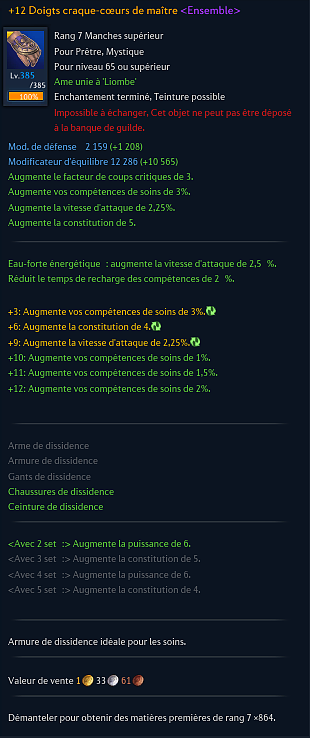
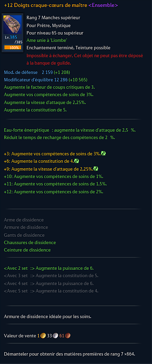
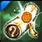
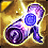

Passage en Maître
Passage en Maître
Le Passage en Maître permet de débloquer des niveaux d'enchantement et ajoute le suffixe "de maître" au nom de la pièce d'équipement, de même qu'un ruban doré (jaune) sur l'icône de la pièce.
Aucun niveau d'enchantement n'est requis pour le passage en maître. C'est-à-dire qu'une pièce enchantée +0 peut être passée maître, tout comme une pièce enchantée +9. Une pièce d'équipement non-maître est limitée au niveau d'enchantement +9.
Le Passage en Maître a un pourcentage de réussite qui varie selon le rang de l'équipement et le type de matériel que vous utilisez.
Avantages :
♦ Donne l'accès à l'enchantement des niveaux +10, +11 et +12.
♦ Augmente des modificateurs de base. Les modificateurs de base d'une pièce d'équipement +9 de Maître sont supérieurs à
ceux d'une pièce d'équipement non-maître. (attaque et impact pour l'arme - défense et équilibre pour les bottes, gants et torse)
En plus du statut "de Maître", il y a un statut caché qui influence les modificateurs de base des pièces d'équipement : le MasterWork.
Il y a 3 rangs de MW, 1%, 2% et 3%. Plus le rang est haut, plus les modificateurs de base sont augmentés.
Ce rang est obtenu aléatoirement et change systématiquement lorsque vous passez un Parchemin énigmatique sur une pièce d'équipement.
Pour voir le pourcentage de MasterWork de son arme : TERA Masterwork Calculator.
♦ Augmente les valeurs des stats rollables () et de base.
ex : Augmente les dégâts de 4,5% devient 6%
 

Matériel
 Parchemins énigmatiques de Maître
Parchemins énigmatiques de Maître
3% de chance de réussite (Taux valable pour les équipements tombés en instances MD, leurs équivalents craftés et les meilleurs sets du jeu. Les équipements tombés en MN ont une chance beaucoup plus élevée.)
ou
 Parchemins énigmatiques de Maître de rang 9, 10 et 11 (non-échangeable)
Parchemins énigmatiques de Maître de rang 9, 10 et 11 (non-échangeable)
3% de chance de réussite (Taux valable pour les équipements tombés en instances MD, leurs équivalents craftés et les meilleurs sets du jeu. Les équipements tombés en MN ont une chance beaucoup plus élevée.)
ou
 Parchemin énigmatique Béni
~15% de chance de réussite (Taux valable pour les équipements tombés en instances MD, leurs équivalents craftés et les meilleurs sets du jeu. Les équipements tombés en MN ont une chance beaucoup plus élevée)
ou
 Parchemin énigmatique Noble
100% de chance de réussite
et
 Parchemin d’identification complexe
Parchemin d’identification complexe
Utilisation
Vous avez besoin d'un parchemin énigmatique et d'un parchemin d'identification dans votre inventaire. Vous faites simplement un clic-droit sur le Parchemin énigmatique de Maître puis cliquez sur l’item (déséquipé) que vous voulez passer en maître, ensuite cliquez sur le bouton de validation (Réinitialiser le statut énigmatique). Une fenêtre pop-up s'affichera sur votre écran si l'objet est passé maître.